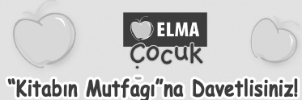

Elma Çocuk ekibi olarak bu projemiz kapsamında, sizi Kitabın Mutfağı’na sokuyoruz ve okuyacağınız kitaplarda söz sahibi olmanızı sağlıyoruz. Okullarımız, eğitimcilerimiz ve kitapsever yaşıtlarınızla işbirliği yaparak sizin için yazılan, yayımlanmaya aday kitapları birlikte değerlendiriyoruz.
Nasıl mı?
• Önce sınıfınız, üyesi olduğunuz topluluk ya da kulübünüzle birlikte aday kitabımızı okuyorsunuz ve kitap hakkındaki duygu, görüş ve beklentilerinizi bizimle paylaşıyorsunuz. Birlikte fikir alışverişi yapıyoruz ve fikirlerimizi yazarımıza iletiyoruz.
• Ardından, yazarımız bu işbirliğinden doğan eleştirileri göz önüne alarak kitapta istediği değişiklikleri yapıyor.
• İncelenen kitabımızın basılmasına karar verilirse, kitap sizin katkılarınızla hayat bulmuş oluyor.
Dilerseniz bu projemizden öğretmenlerinize